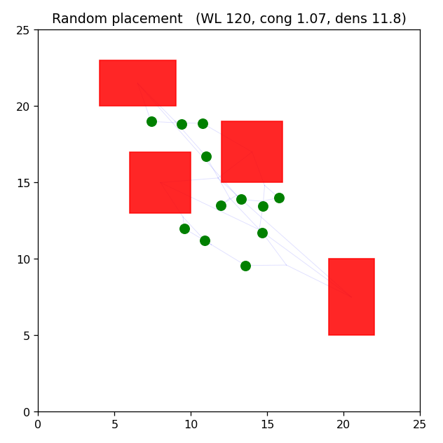
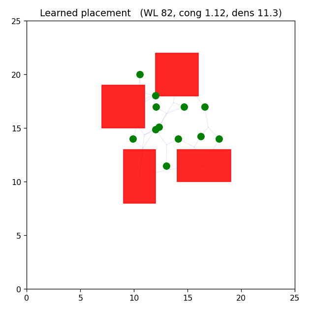

A faithful reduced version of the Google graph-placement method: reinforcement learning places the macros, a force-directed pass places the standard-cell clusters, and a three-term proxy reward scores the whole placement.
This mirrors the paper, where the true cost (full place-and-route) is far too slow to run inside millions of RL episodes, so a fast proxy is used. The three terms trade off against each other: the agent cannot simply clump the macros (that raises congestion and density) or simply spread them (that raises wirelength).


| Placement | Wirelength | Congestion | Density |
|---|---|---|---|
| Random | 129 | 0.87 | 10.9 |
| Learned | 107 | 0.82 | 9.8 |
The learned policy improves all three objectives at once. Red rectangles are hard macros; green circles are standard-cell clusters; light lines are nets drawn to each net's centroid.
See the repository README for the method, lineage, and roadmap.